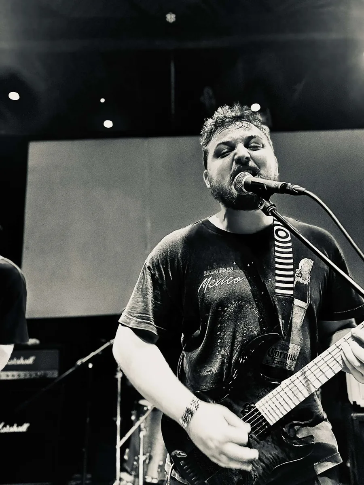
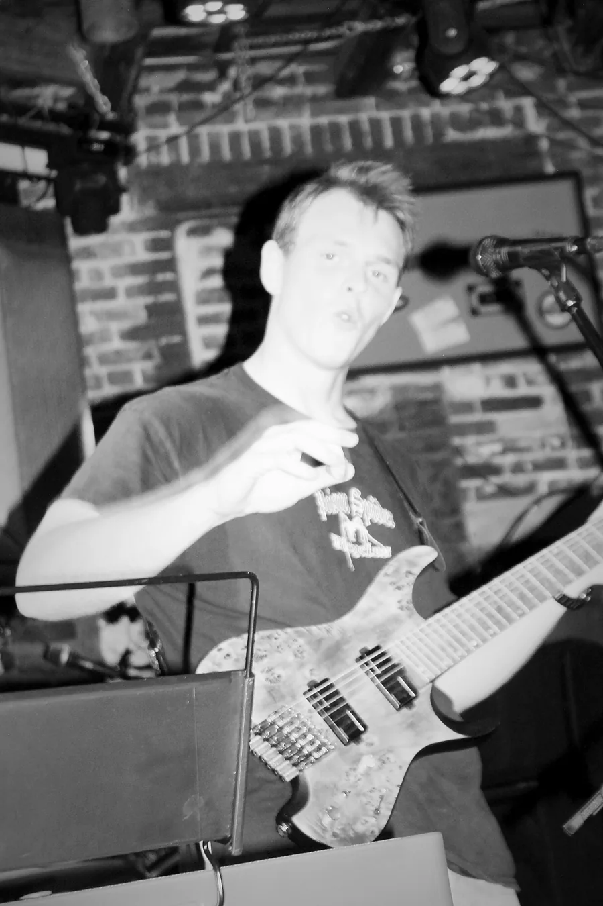
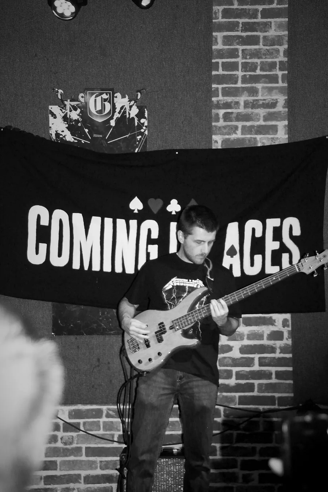
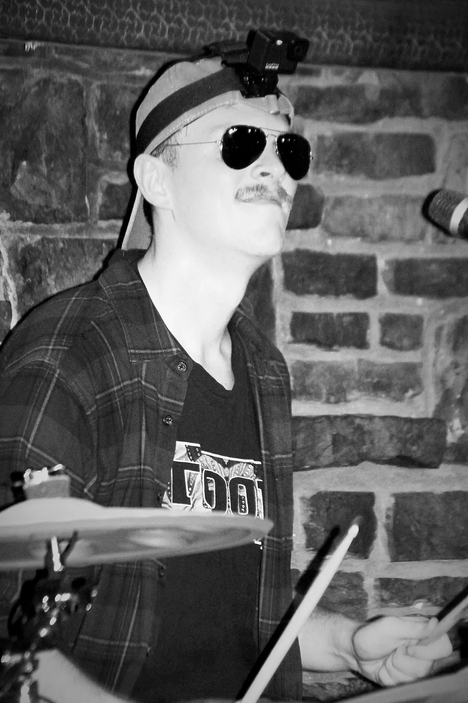

- Line-up
- Four piece — guitars, bass, drums, keys
- Booking
- comingupaces1@gmail.com
Four friends from the hills of Northwest Arkansas, playing rock the way it was meant to be played — loud, honest, and live.
Coming Up Aces is a four-piece classic rock band forged from friendship and a shared love of the classics. Drawing deep from the well of Southern rock legends like Lynyrd Skynyrd and the heartland storytelling of Tom Petty, then running it through the raw, unfiltered energy of grunge, the band has carved out a sound that feels both timeless and alive.
Nate Poplin fronts the band on lead vocals and rhythm guitar. Parker Gent covers lead guitar, keys and harmonica, Brandon Hargis holds the bottom end on bass, and Riley Gent drives the whole thing from behind the kit. Two guitars, keys and harmonica over a rhythm section that leans into the pocket — it is a live band first, built to fill a room rather than a studio.
You'll find Coming Up Aces in bars, on festival stages and anywhere across Arkansas and Oklahoma — wherever there's a room that wants a real rock band.
Short version, for listings: Coming Up Aces is a four-piece classic rock band from Northwest Arkansas — Southern rock roots, heartland storytelling and grunge energy, played loud and live.






All photos are cleared for use in promotion of Coming Up Aces performances — posters, listings, social posts and press. Please credit Coming Up Aces where a credit line is used. Need a different crop, an orientation that isn't here, or a photo without the watermarked backdrop? Email us and we'll send it over.